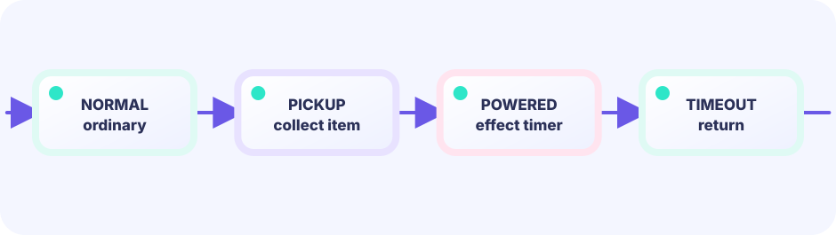

State flag
Track power with a bool.
powered bool
★★★★☆ / PLAYABLE
Power-up state changes what a collision means. The same overlap becomes damage or a stomp depending on your status.
This track shares the LEVEL 01 state boundary: rules advance in Update, while Draw is a replaceable projection—each step adds one new piece.
SHOWCASE FINAL / QUALITY LEAP
This capstone combines layered parallax, four-stage transformation run, and goal celebration into one playable Update loop. Play it first, then identify where each earlier lesson now works inside the finished game.
PLAYABLE / WEBASSEMBLY
Move and jump through changing terrain: rising islands, sunset gaps, and a night-time staircase. Coins, power-ups, and stomps burst into particles while Ebi bounces through a short run cycle.
FIRST-TIME READER
Find where this one line is used, then follow how its value changes on screen. This is the shared game-state boundary: add rules in Update, then choose an independent presentation in Draw. The numbered steps below add one system at a time.
ONE RULE TO TRACE
Match the explanation to this line, then test the change in the game.
if item.kind==Grow { g.big=true }
DEEP DIVE / POWER STATE
Because a powered flag selects which rule row applies.
Track power with a bool.
powered bool
Orb pickup sets the flag and changes look.
if overlap(orb) { powered = true }
On enemy touch, stomp if powered else take damage.
if powered { stomp } else { hurt }
TRY IT / LAB
When powered is true, enemy contact becomes a stomp instead of damage.
A slow-motion model of the real game rule.
TRY IT · GO
powered := g.powered if powered { stomp } else { takeDamage }
—
THE STATE RULE
collision(player, enemy)
result depends on
powered ? stomp : damage
One collision test, branched outcomes — the classic Mario-style power pattern.
IN THE REAL GAME
On enemy overlap, inspect powered first.
if overlap(player, foe) {
if g.powered && fallingOnto(foe) {
stomp(foe)
} else {
takeDamage()
}
}WITHOUT STATE
Items that do not change strength remove the joy of growth.
WITH FLAGS
New powers are new flags and branches.
YOUR FIRST TUNING
A limited powered duration creates tense adventures.
FEEDBACK
BONUS / DRAW ONLY
This WASM is built from the same package as the finished game above. It delegates to the original Update and Layout unchanged. The native-size game stays playable beside an edge view of the same instant and a mock game drawn entirely with ASCII characters. Rules and presentation can be designed separately.
Advances input and game facts once for every view.
Returns the original game's size unchanged.
Chooses pixels, edge lines, ASCII, or another presentation.
THE ONLY BOUNDARY
The native snapshot is the input-aligned playable surface. The edge inset uses Kage to keep only neighboring-pixel differences. The ASCII mock shows how a comparable game scene can communicate with characters alone. Rendering does not change the rules.
func (g *gallery) Update() error {
return g.inner.Update()
}
func (g *gallery) Layout(w, h int) (int, int) {
return g.inner.Layout(w, h)
}
func (g *gallery) Draw(screen *ebiten.Image) {
snapshot := ebiten.NewImage(width, height)
g.inner.Draw(snapshot)
screen.DrawImage(snapshot, nil) // native-size playable input surface
drawEdgeInset(screen, snapshot)
drawASCIIGameMock(screen)
}